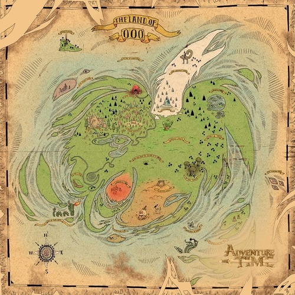

遠古時代，地球就已經存在著魔法。不過隨著人類文明的發展，魔法逐漸被人們遺忘，直到一場核戰「蘑菇戰爭」爆發，導致人類面臨滅絕的危機，而魔法再度回歸地球，卻也同時造就了陰魔王的誕生。
戰後約20年，倖存的人類為躲避吸血鬼和殭屍的襲擊而紛紛逃離荒廢的大都市，來到兩座小島，並在那裡建造新的文明並命名為「起源之島」，為了防止人們離開島嶼，人們製造出一隻巨大機器人「守護者」，能夠防止人類離開該島也能防止外來勢力入侵。1000年後，島上文明已經擁有高度水平，但其中一座島爆發殭屍病毒，使得該島荒廢，其居民被移送到另一座島。
至於荒廢的城市，則其環境自行發展，經過了1000，該大陸的生態、物種及文化已變得相當多元，以及大量的魔法，成為了所謂的「哇賽秘境」。
故事追隨人類阿寶和一隻擁有能夠任意變化自己身體的魔力，是他最好的朋友、同時也是養父長子的狗老皮展開的探險旅程，他們生活在蘑菇戰爭結束約1000年後的哇賽秘境,沿著旅途陸續遇上劇中其他的主要角色包括泡泡糖公主、冰霸王以及吸血鬼女王艾薇爾等人。
↑↑↑挖賽秘境↑↑↑
阿寶戴著白色頭套、藍色上衣、身上背著綠色背包，隨身佩戴著一把劍。頭套裡有著金黃色長髮。
有著很強的責任感，每次做事都非常執著，還因此為人打抱不平。
在這部動畫之中，他充滿著天真浪漫的熱情。而他非常喜愛歷險及幫助別人，夢想是成為偉大的英雄。
老皮的構想源自於鬥牛犬，穿著蜘蛛精靈所紡織成的透明緊身褲。
他有著令人不可思議的變形能力、伸縮能力以及靈敏的嗅覺，這是他最厲害的地方。
他是個玩世不恭的老頑童，對任何大小事都能開玩笑。對於人生百態，他總是笑笑地去看待每一件事情。可以說是樂觀的代表人物。
冰霸王是阿寶和老皮常見的對手，以及偶然的盟友，經常綁架哇塞秘境各地公主，想強迫她們嫁給他，泡泡糖公主是他平常追求的對象。
冰魔法能力源自於戴著的神奇皇冠，乃致精神異常。雖眾人認為他完全瘋癲，實際上冰霸王孤獨且被誤會，對自己王國內的企鵝有愛。
儘管很少懷有對他人的傷害，冰霸王仍可能由於他潛在的力量和不穩定的心態，非常危險。
統治糖果王國的公主，是泡泡糖與人類DNA的混血兒。曾騙阿寶年齡18歲，已知在蘑菇雲戰爭後的核污時期就已經存在，並用糖淨化了核污染。個性親切溫和，在前導片時就已登場。特徵是戴著皇冠，留著粉紅色的泡泡糖長發。
阿寶曾經喜歡的對象。寒冰王暗戀且最常綁架的對象，對冰霸王的態度也極其惡劣。
熱愛科技，但研究的幾乎是禁斷型科技，並且也因為偶爾出錯而導致糖果王國的危機。對魔法抱持否定，並研究出魔法都是基於科學上所產生的現象。
火焰公主顧名思義地是由火所組合而成的，雖然她外表溫和但其實是非常強大的人，由於她的情緒起伏是非常大的，所以當她情緒受到波動時，身體會變成非常的熱且有火苗會從她身上向外竄出，直接融化地層掉到岩床裡面，從內部毀了整個世界！！
而年幼時期的火焰公主，父親因為擔心他會篡奪王位而把她流放到哇賽秘境，但有憐憫之心的泡泡糖公主接她回來，並把她關在瓶子裡幫助她控制火焰，所以火焰公主對外面的世界完全是未知的，而長大後的火焰公主還是推翻了他的父親並重建新的政府。
艾薇爾不是靠吸血生存，而是吸食紅色的色素。當艾薇爾缺乏紅色時，她會進入「野獸」狀態，並本能嘗試殺死他人和吸食他們的血。她很怕曬太陽，並會轉變成不同大小的蝙蝠。艾薇爾還擁有一些超能力，包括空中漂浮、隱身、自我癒合和變身，她是吸收了一些強大吸血鬼的精華後才獲得這些能力。
大約一千年前，惡魔領主韓森·阿巴迪爾和人類女子生下艾薇爾。艾薇爾在蘑菇戰爭期間被人遺棄到地球上。在這段時間裏，賽門·派翠克夫在城市廢墟中找到艾薇爾，並給她一隻名為小波的毛絨公仔來讓她振作。兩人產生互相關愛的關係，後來皇冠控制了賽門的心智，這讓他被迫離開艾薇爾。
在這段時期，她與父親團聚，但對他冷酷且無情的處事感到噁心。儘管她曾容忍他邪惡又自私的滑稽舉動，但發現阿巴迪爾偷吃她為自己炸的薯條後與他斷了所有聯繫。
在接下來的幾年中，她在哇賽祕境閒逛並開始殺害大部分的吸血鬼。艾薇爾在殺死吸血鬼後，她自己的惡魔能力在吸取靈魂後能獲得他們獨特的能力。當艾薇爾嘗試對戰吸血鬼王時被咬而轉變成吸血鬼。艾薇爾與糖果王國領袖泡泡糖公主成為朋友。由於統治王國的負擔越來越重，泡泡糖最終推開艾薇爾，讓兩人之間的縫隙產生了一段時間。
同時也是艾薇兒的舊家